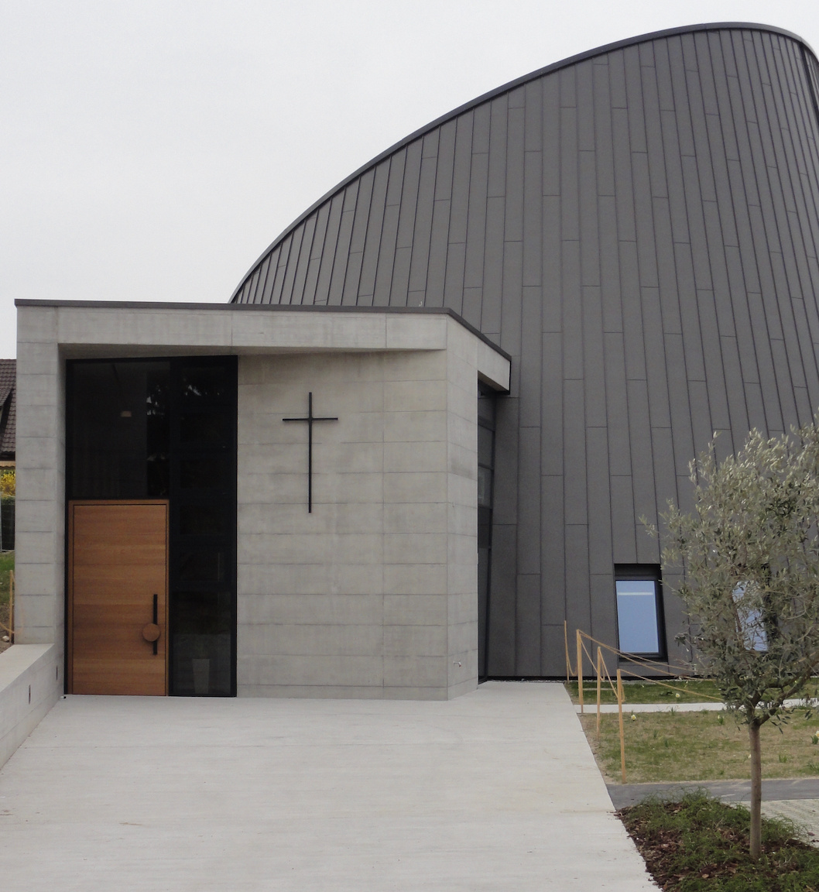
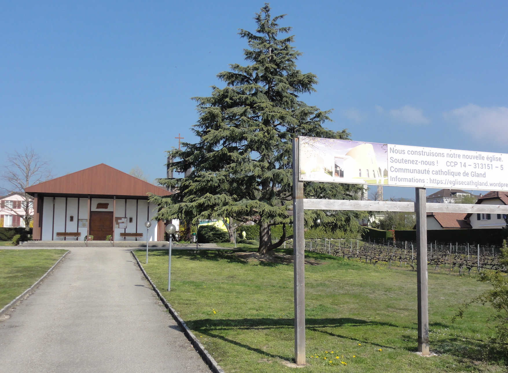

Kirchliche Aufbrüche manifestieren sich oft in reger Bautätigkeit. Im Hochmittelalter etwa schlug sich die explosionsartige Ausbreitung monastischer Reformbewegungen wie der Cluniazenser und der Zisterzienser in Westeuropa in einer aus heutiger Sicht fast unglaublich grossen Zahl von neu errichteten Abteien, Prioraten und Kirchen nieder. Ähnliches lässt sich in der zweiten Hälfte des 20. Jahrhunderts beobachten, die durch wirtschaftliche Prosperität, gesellschaftliche Öffnung und kirchliche Dynamisierung geprägt war: Allein in der Schweiz wurden in dieser Zeit rund tausend Kirchen, Kapellen und Gemeindezentren verschiedener Konfession gebaut. Demgegenüber steht heute, wo Säkularisierung und Schrumpfung der Volkskirchen rasant voranschreiten, nicht mehr der Bau, sondern die Umnutzung oder gar der Abriss kirchlicher Gebäude im Fokus. Im 21. Jahrhundert sind in der Schweiz bisher lediglich etwa vierzig neue Kirchen und Kapellen entstanden. Eine davon ist die 2022 geweihte Église Saint-Jean-Baptiste in Gland.
Der Haupteingang der Église Saint-Jean-Baptiste im März 2022. (Bild: David Zimmer)
Pas la ville où l’on s’arrête souvent
Obwohl Sitz zahlreicher bekannter Unternehmen (wie Philips und Swissquote) und Organisationen (wie WWF International und der Weltnaturschutzunion), liegt Gland abseits des öffentlichen Interesses: nicht direkt am See, städtebaulich wenig attraktiv, kaum Sehenswürdigkeiten mit überregionaler Ausstrahlung. Aufgrund der vielen Arbeitsplätze und der verkehrstechnisch guten Lage – ziemlich genau in der Mitte zwischen Genf und Lausanne – hat die Waadtländer Gemeinde freilich einen Bevölkerungs- und damit verbunden einen Bauboom erlebt; die Einwohnerzahl hat sich in den letzten sechs Jahrzehnten versiebenfacht. Ende der 1960er Jahre wurde eine wuchtige evangelisch-reformierte Kirche gebaut und Anfang der 70er Jahre eine Baracke, die zuvor als Arbeiterunterkunft in den Walliser Alpen gedient hatte, als römisch-katholische Notkapelle umgenutzt. Letztere erwies sich mit ihren 160 Sitzplätzen jedoch zunehmend als zu klein für die vielen Zugezogenen katholischen Glaubens, besonders an hohen kirchlichen Festtagen. Zudem war das schlecht wärmeisolierte Gebäude dringend sanierungsbedürftig.
Die Notkapelle im April 2019. (Bild: David Zimmer)
Mutiges Neubauprojekt
Die katholische Gemeinschaft von Gland, zu der auch die Gläubigen der beiden angrenzenden politischen Gemeinden Vich und Coinsins gehören und die der Pfarrei Nyon (Pastoralraum Nyon - Terre Sainte) angeschlossen ist, entschied sich zu Beginn der 2010er Jahre in einem mutigen Schritt gegen eine kostspielige Renovation der bestehenden Notkapelle und für den Bau einer komplett neuen Kirche unmittelbar daneben. Aus einem Architekturwettbewerb unter Beteiligung einer Handvoll Architekturbüros aus der Region ging 2016 das Projekt des Büros Coretra SA der Gebrüder Flavio und Angelo Boscardin aus Nyon als Sieger hervor. Allerdings gestaltete sich nicht nur die Finanzierung des viereinhalb Millionen Franken teuren Neubaus schwierig (was zu erwarten gewesen war), sondern auch die Baubewilligung (was für die Projektbeteiligten offenbar unerwartet kam): Mehrere Anwohnerinnen und Anwohner erhoben Einsprache – wegen angeblich zu geringer Grenzabstände, einer ungenügenden Zahl von Parkplätzen und unpassender Ästhetik – und zogen damit zum Teil bis vor Bundesgericht. Dieses gab 2019 grünes Licht; im Juni 2020 erfolgte schliesslich der Baustart.
Ein Himmelsobservatorium?
Die neue Église Saint-Jean-Baptiste, am 13. Februar 2022 von Diözesanbischof Charles Morerod in einem feierlichen Festakt geweiht, befindet sich in einem eher unansehnlichen Wohnquartier mit Bauten aus den 1980er und 90er Jahren, die den Blick auf die Kirche erst aus einigen Dutzend Metern Entfernung freigeben. Von aussen erinnert das mit grauem Zinkblech verkleidete Kirchenschiff in Form eines Kegelstumpfs, dessen Dachfläche sich schräg nach Südwesten neigt, ein bisschen an ein Himmelsobservatorium. Der Zutritt erfolgt über einen rechteckigen, in Sichtbeton gehaltenen Eingangs- und Erschliessungstrakt, der den Kegel seitlich durchstösst. Zunächst gelangt man in den Narthex, der sich an das im Innern ovale Kirchenschiff schmiegt, dann in den eigentlichen Kirchenraum. Hier dominieren das Weiss der Holzlamellen an den Wänden, die Grautöne des Betonbodens und des liturgischen Mobiliars, das Hellbraun der Stühle – und das natürliche Tageslicht, das durch eine schmale vertikale Aussparung in der Wand sowie ein kaum sichtbares umlaufendes Fensterband an der Decke von oben hereindringt. Ambo, Altartisch und Sedilien sind im Zentrum angeordnet, so dass sich die Gläubigen darum herum versammeln.
Das Kircheninnere der Église Saint-Jean-Baptiste im März 2022. (Bild: David Zimmer)
Ort der Begegnung
Überhaupt soll die neue Kirche nach dem Willen der Verantwortlichen zu einem Ort der Begegnung werden, der nicht nur römisch-katholische Gläubige, sondern auch weitere Einwohnerinnen und Einwohner von Gland und Umgebung anzieht. Im Untergeschoss stehen ein grosser Saal mit 150 Sitzplätzen und zwei kleinere Räume für kulturelle Veranstaltungen, Anlässe lokaler Vereine und private Feste zur Verfügung. Eine eigens zu diesem Zweck gegründete «Association culture et rencontre de Gland et environs» koordiniert und bewirbt die Raumnutzung. Die Gemeindepräsidentin von Gland, Christine Girod-Baumgartner, würdigte die Einweihung der Kirche denn auch als «historischen Schritt»; der neue Begegnungsort ergänze die bestehenden Angebote in der Gemeinde und stärke das Zusammenleben der Wohnbevölkerung.
Selbstbewusste Geste
Der Bau einer neuen Kirche im frühen 21. Jahrhundert widerspricht der landläufigen Wahrnehmung, dass sich die Kirchen zunehmend und unaufhaltsam leeren. Gibt eine solche Sicht ohnehin primär die Verhältnisse in Westeuropa wieder, muss sie wohl grundsätzlich nuanciert werden: In Bezug auf die Entwicklung der Volkskirchen und die kirchliche Bautätigkeit lassen sich auch in der Schweiz Phasenverschiebungen und im Einzelnen gegenläufige Tendenzen beobachten. Die hierzulande wenig verbreitete architektonische Formensprache der neuen katholischen Kirche zeugt von einem Selbstbewusstsein, das in reformiertem Umfeld erstaunen mag. Aus diesen Gründen müsste ein «Guide Michelin» für kirchlich Interessierte dem Bauwerk das Prädikat «Mérite un détour» (mit zwei Asterisken) verleihen. Ein Umweg nach Gland, die Besichtigung der Église Saint-Jean-Baptiste und der Besuch des im Innern schlichten, stimmigen Kirchenraums lohnen sich allemal.
David Zimmer ist Alumnus der Universität Freiburg i.Ü.
Weitere Artikel von {{ author.author }} finden Sie hier:
Zur Vertiefung:
- De Simone-Cornet, Geneviève: Une nouvelle église, défi et pari sur l’avenir. Écho magazine, no 7, 17.02.2022, S. 32–34. Verfügbar unter: echomagazine.ch (02.09.2022).
- Pesenti, Davide: «S’il vous plaît… construis-moi une église». Hautes fréquences, Radio RTS La 1ère, 25.04.2021. Verfügbar unter: rts.ch/audio-podcast (02.09.2022).